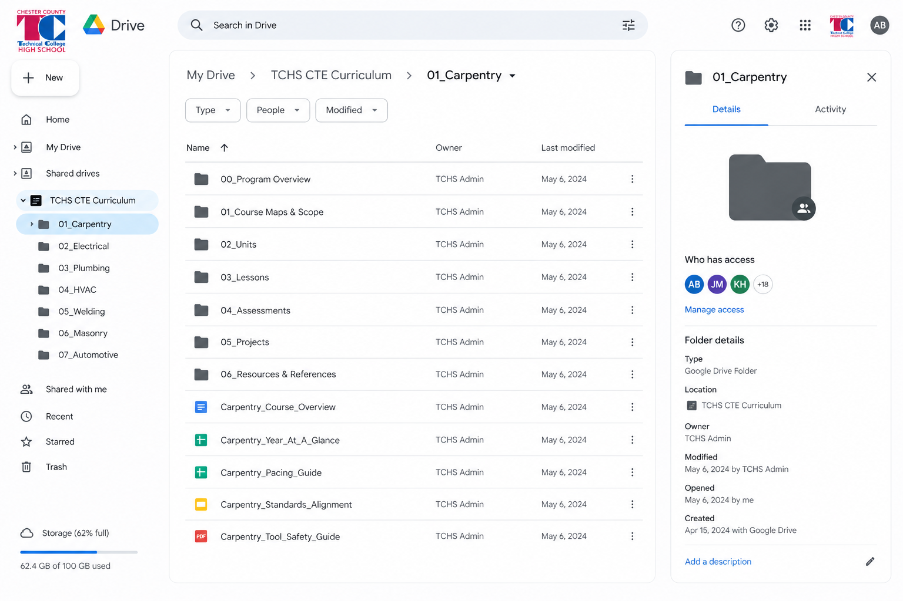
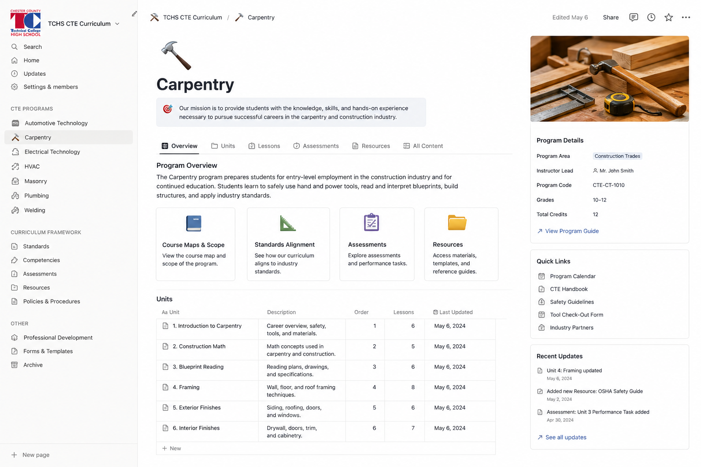
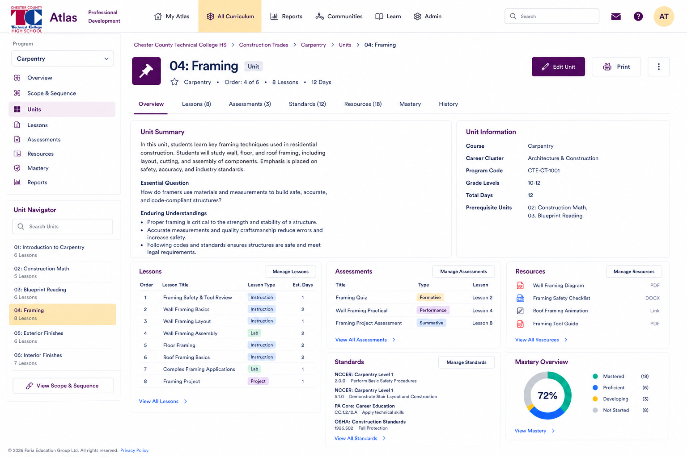
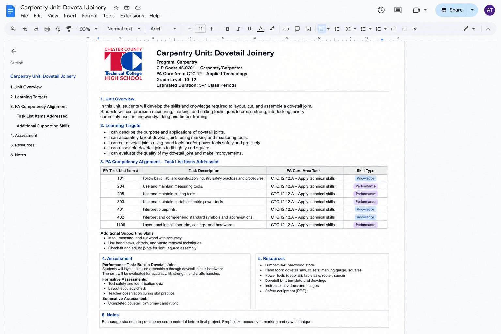
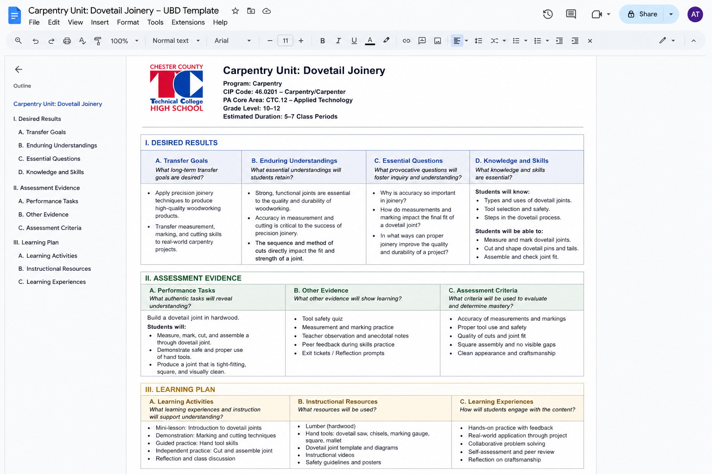
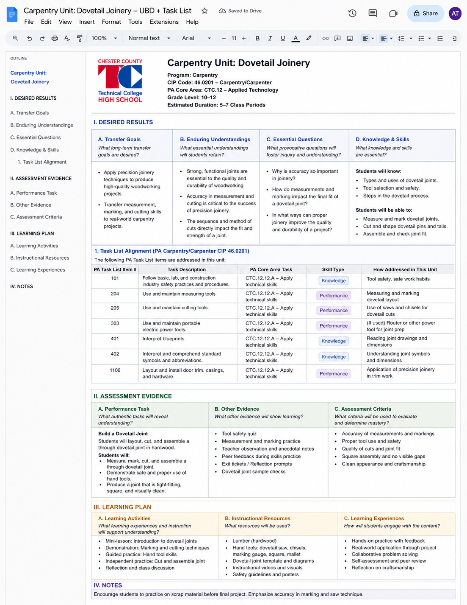

A CTE curriculum that is standard, guaranteed, and viable across all three campuses?
- Already in use: no new accounts, no new tools
- Sheets handles the alignment tracker without any setup cost
- Shareable links work across campuses immediately
- Folders don't enforce structure; anyone can move or rename files
- No way to see curriculum across programs without opening every file
- Drive search is unreliable at scale; findability degrades over time
Design the folder architecture, naming conventions, and shared templates. Deliver a ready-to-use Drive structure and a curriculum alignment tracker teachers can use immediately.

- Free for most use cases; paid plan unlocks larger teams and guests
- Units, programs, and competencies can be linked, not just filed
- Filtered views let leadership see across programs and campuses
- Notion requires intentional setup; it won't organize itself
- Teachers/coaches need onboarding before it's usable in practice
- Curriculum-specific logic has to be built manually; no CTE templates out of the box
Build and configure the Notion workspace with linked databases for programs, units, and competencies. Deliver a functional system with documentation and a teacher/coach onboarding guide.

- Built for this purpose; alignment and reporting included
- Highest long-term ceiling
- Leadership visibility without extra work
- Real licensing cost
- Onboarding and change management required
- Most effective once a writing process is established
Evaluate platform options against CTC's needs, facilitate the selection process, and support implementation planning. Guide curriculum import and configuration once a platform is selected.

- Directly accountable to credential requirements
- Teachers recognize the structure from their industry background
- Clearest path from task list to classroom
- Risk of checklist curriculum; skills without coherence or transferability
- Assessment can drift toward compliance rather than demonstration
- Does not immediately connect to bigger ideas or essential questions
Source and organize the state task lists for each program, facilitate the scope and sequence mapping, and deliver a structured competency framework ready for unit writing.

- Builds coherent, transferable curriculum; skills have a "why"
- Assessment is authentic, designed before instruction
- Task list stops being a ceiling; it becomes the floor
- Enduring understandings are harder to write than they look
- More abstract than traditional task list
- Requires facilitated writing or PD on UbD
Facilitate enduring understanding and essential question development with teachers/coaches. Deliver completed Stage 1 frameworks for each program, grounded in teacher/coach expertise and ready for unit writing.

- Credential accountability and transferable understanding in the same structure
- Both LLS specialists and teachers/coaches have a concrete entry point
- Most likely to produce curriculum that is standard, guaranteed, and viable
- Requires fluency in both frameworks; the build is more complex
- Risk of UbD becoming decorative if the task list dominates in practice
- Takes the longest to build well; front-loads the investment
Lead the competency clustering process using the state task list, then facilitate UbD design sessions to wrap enduring understandings and performance tasks around each cluster. Deliver integrated unit frameworks for each program.

- Teachers/coaches see a finished product before they produce one
- No ambiguity about what "done" looks like; the exemplar shows it
- Strongest quality control on the first unit
- LLS needs enough program context to build something credible
- Teachers/coaches are reacting, not co-producing; ownership is lower
- Exemplar may over-fit to one program and need revision as others are added
Produce one fully realized unit plan for the pilot program, all three stages complete. This unit is our deliverable and becomes the model every subsequent unit is measured against.
- LLS and teachers/coaches each do what they do best
- Content is grounded in real program expertise from the start
- Teachers/coaches understand the structure because they used it to build something
- Requires significant scheduled teacher/coach time
- Quality depends on facilitation; harder to scale across many programs at once
- Output quality varies unless sessions are tightly structured
Design and facilitate structured working sessions with Building Trades teachers/coaches. We bring the framework and the process; teachers/coaches bring the program expertise. Each session produces draft curriculum, not just training.
- Builds teacher/coach independence
- Scales better once teachers/coaches internalize the framework
- Higher ownership and expertise of units
- Writing quality varies until teachers/coaches develop fluency with the framework
- Structural drift without close review; training doesn't guarantee consistency
- Slowest path to production-quality curriculum
Design and deliver curriculum writing professional development, including a hands-on orientation to the unit template and design framework. Provide a structured coaching cadence for teachers/coaches as they produce units independently.